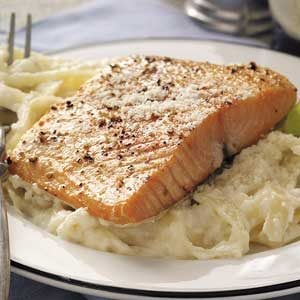

Salmon and Fettuccine

Another classic southern Italian dish
This dish is a great introduction to Italian seafood.
The timing of this meal can be tricky, but the prep-work is simple and requires no complicated ingredients.
Ingredients
For the chicken:
- 3-4 Salmon fillets, about 1.5 pounds
- 1 box of fettuccine pasta
- ½ cup of olive oil
- 2 cups grated Pecorino Romano or Parmesan cheese
- 2 cups heavy whipping cream
- 4 tablespoons of butter
- 1 tablespoon salt, or to taste
- 1 tablespoon pepper, or to taste
- 1 1/2 teaspoons garlic powder
Steps
-
Sprinkle salt and pepper generously over salmon, both sides if they are skinless.
-
Heat oil in a large skillet or pot over medium heat.
-
Add at least 8 cups of water to a pot and bring to a boil.
-
In a smaller pot, add butter and put on medium-low heat to start melting it. Once it is melted, add the heavy whipping cream and stir. Keep on medium heat, stirring very often and watching it so that it doesn't boil over. Lower heat if it begins to boil or bubble. Once you have started the alfredo sauce, add the pasta to the boiling water.
-
Once the oil in the pan is hot, add the salmon fillets and cook for 3-4 minutes on each side. Flip with tongs.
-
Add cheese and garlic powder to the heavy cream and stir thoroughly, lower heat to simmer and continue to watch until everything else is done, allowing the sauce to thicken.
-
Once salmon is golden-brown on both sides, remove from pan and shut heat.
-
Strain pasta once it has finished cooking, and serve everything immediately!